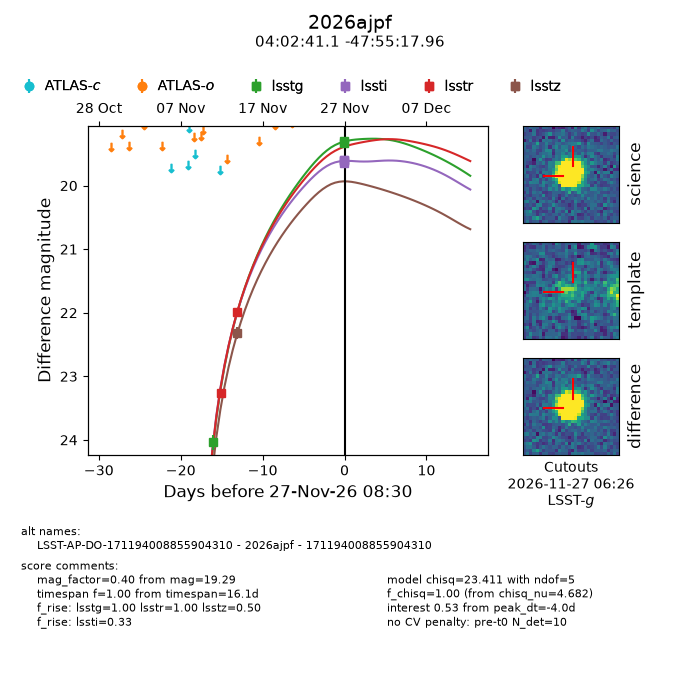
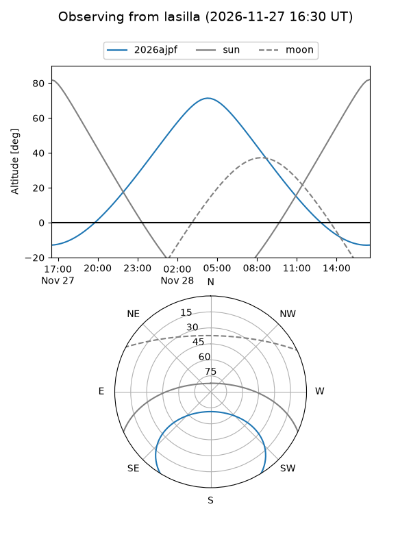
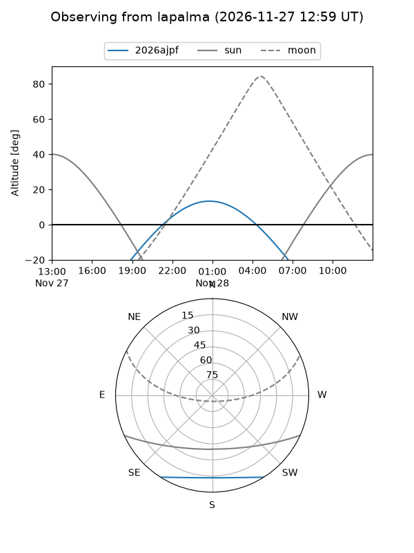
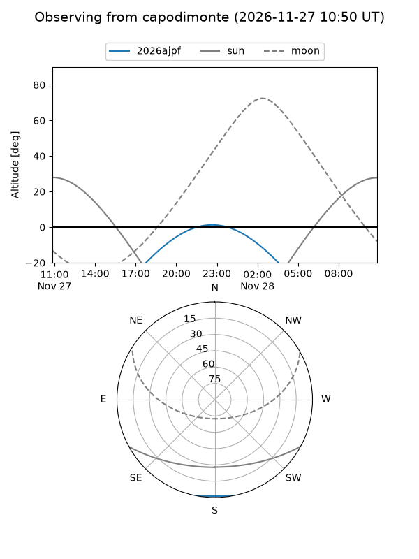
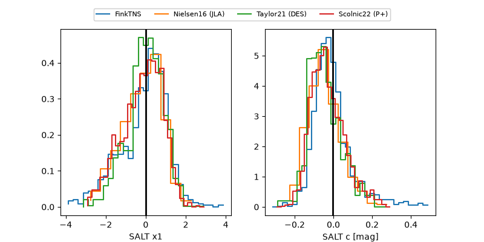

2026ajpf
Target 2026ajpf at 2026-11-27 08:31
Aliases and brokers:
FINK-LSST: lsst.fink-portal.org/171194008855904310
Lasair-LSST: lasair.lsst.ac.uk/objects/171194008855904310
ALeRCE-LSST: lsst.alerce.online/object/171194008855904310?survey=lsst
YSE-PZ: ziggy.ucolick.org/yse/transient_detail/2026ajpf
TNS name: wis-tns.org/object/2026ajpf
Direct TNS query: direct search
alt names
171194008855904310 (broker_lsst,fink_lsst)
2026ajpf (tns,yse)
LSST-AP-DO-171194008855904310 (iau_lsst)
Coordinates:
equatorial (ra, dec) = 60.6712,-47.92165
equatorial (HMS+DMS) = 04:02:41.09,-47:55:17.96
galactic (l, b) = (255.4548,-47.64485)
Flags:
peak dt: -4.0
Photometry:
last lsstg=19.29, lssti=19.64, lsstr=22.00, lsstz=22.32
3 lsstg, 4 lssti, 2 lsstr, 1 lsstz detections
Lightcurve

Visibility



Additional plots
